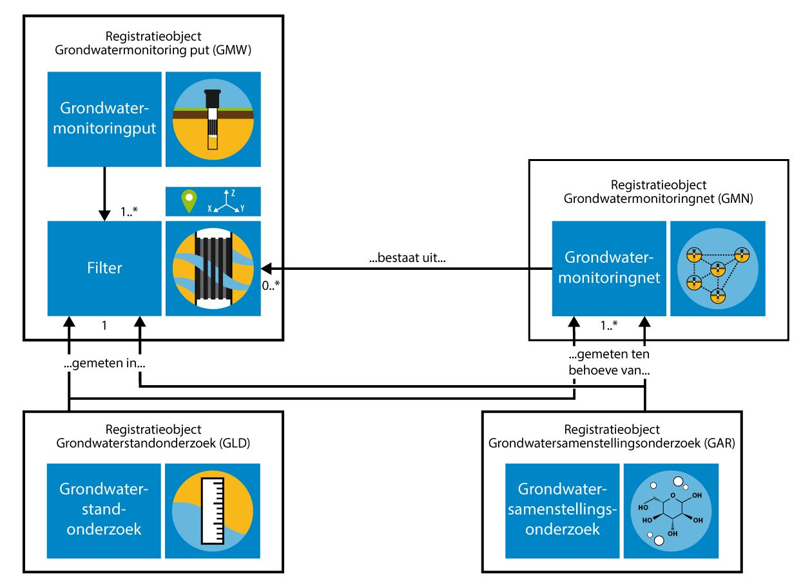
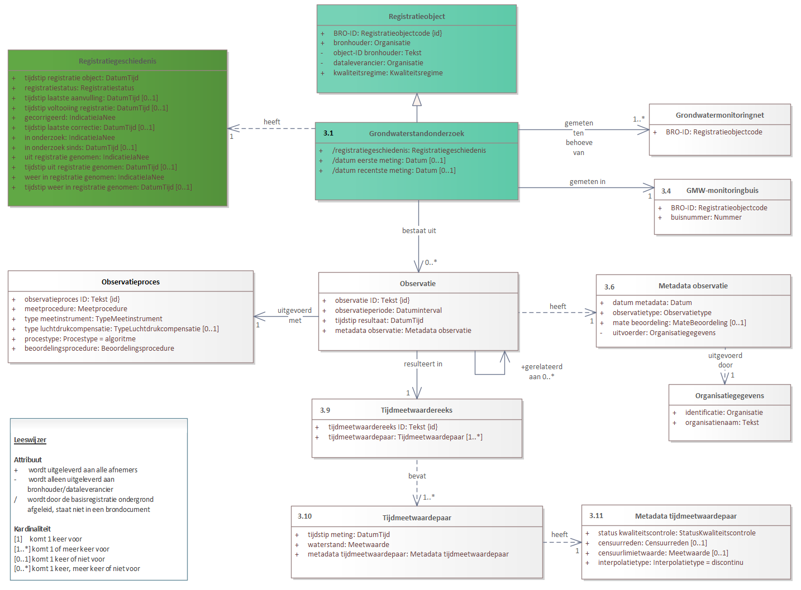

Creative Commons Attribution 4.0 International Public License (CC-BY)
Samenvatting
Samenvatting van informatiemodel.
Status van dit document
Deze paragraaf beschrijft de status van dit document ten tijde van publicatie. Het is mogelijk dat er actuelere versies van dit document bestaan. Een lijst van Geonovum publicaties en de laatste gepubliceerde versie van dit document zijn te vinden op https://www.geonovum.nl/geo-standaarden/alle-standaarden.
Dit is een werkversie die op elk moment kan worden gewijzigd, verwijderd of vervangen door andere documenten. Het is geen door de werkgroep goedgekeurde consultatieversie.
Dit is een werkversie van een standaard in ontwikkeling waarvan de inhoud onvolledig is, incorrect kan zijn en op elk moment kan wijzigen. Hoofdstuk vijf is automatisch gegenereerd uit een UML model dat nog in ontwikkeling is.
1. Inleiding
1.1 Doel en doelgroep
In de basisregistratie ondergrond (BRO) wordt een aantal typen gegevens geregistreerd, de
registratieobjecten. Voor elk van deze registratieobjecten wordt er een catalogus gepubliceerd.
De catalogus bestaat uit een inleiding over het specifieke registratieobject en de gegevensdefinitie voor het registratieobject.
De catalogus beschrijft welke gegevens over het registratieobject in de basisregistratie ondergrond zijn opgeslagen.
Het document is bedoeld voor alle gebruikers van de basisregistratie ondergrond en moet duidelijk maken welke gegevens er in
het systeem zitten. Aan aanleverende partijen moet het vertellen welke gegevens in de basisregistratie ondergrond moeten
komen, en aan afnemende partijen welke gegevens zij in de basisregistratie ondergrond mogen verwachten. Het document is voor
een breed publiek bedoeld en de informatie moet naast precies ook begrijpelijk zijn.
1.2
Samenhang met andere documentatie
Voor ieder registratieobject worden de volgende beschrijvende documenten opgesteld:
de catalogus
de handboeken voor inname en uitgifte
de koppelvlakbeschrijvingen voor inname en uitgifte.
De catalogus beschrijft de inhoud van de basisregistratie ondergrond en vormt de basis voor de andere beschrijvende documenten. In de catalogus staan de definities van de gegevens van het registratieobject, de entiteiten en attributen, met een beschrijving van de onderlinge samenhang. Bij de definitie worden de kardinaliteit (het aantal keer dat het gegeven voorkomt), de regels die in controles worden gebruikt en de waarden die zijn toegestaan vermeld.
Een handboek voor inname of uitgifte beschrijft het proces dat bij inname of uitgifte van gegevens wordt doorlopen.
In een handboek worden ook de gegevens gedefinieerd die betrekking hebben op het proces van inname of uitgifte. Om te zien
wat er aangeleverd moet worden of wat er uitgeleverd kan worden, heeft men de catalogus nodig.
De koppelvlakbeschrijvingen zijn geschreven voor softwareontwikkelaars. Op basis van de twee vorige typen documenten
staat hierin beschreven hoe het registratieobject en de bijbehorende transacties worden vertaald naar het technische koppelvlak
dat is gerealiseerd door middel van webservices. De koppelvlakbeschrijving gaat dus in op de technische realisatie van
de transacties waarbinnen gegevens van het registratieobject worden uitgewisseld.
Deze documenten hangen samen zoals hieronder afgebeeld.
TODO afbeelding opnemen
Figuur 1Samenhang tussen documentatie
Naast deze documenten is er een document dat het systeem van de BRO als geheel beschrijft met als titel BRO-architectuur. In dat document wordt het ontwerp en de algemene werking van de BRO beschreven. Het document BRO-architectuur is alleen nog in een eerste en prille versie beschikbaar.
1.3 Leeswijzer
De volgende hoofdstukken van dit document geven respectievelijk een algemene inleiding in kenmerken en begrippen uit de basisregistratie ondergrond, een inleiding in het begrip grondwater, een uitleg over de catalogus en tenslotte de catalogus zelf.
In de tekst zijn termen cursief weergegeven als het termen zijn die in hoofdstuk § 5.Gegevensdefinitie, de gegevensdefinitie, zijn gedefinieerd.
2. Algemene kenmerken en begrippen
2.1 Opzet van het systeem
De basisregistratie ondergrond is een systeem dat een schakel vormt in een informatieketen. Aan het begin van de keten staan bestuursorganen die opdracht geven tot de productie van gegevens, of zelf gegevens produceren. Die bestuursorganen worden bronhouders genoemd. De geproduceerde gegevens worden door een dataleverancier geleverd aan de beheerder van het systeem, de registerbeheerder. De bronhouder is verantwoordelijk voor de levering van gegevens. Hij kan besluiten zelf dataleverancier te zijn of andere partijen een machtiging voor levering te verlenen. De beheerder van de basisregistratie ondergrond registreert de aangeleverde gegevens en levert ze voor (her)gebruik door aan allerlei afnemers.
De opzet van het systeem moet begrepen worden vanuit de verantwoordelijkheden die in de keten zijn belegd. De aangeleverde
gegevens vallen onder de verantwoordelijkheid van de bronhouder en de registerbeheerder mag die
gegevens niet veranderen. De registerbeheerder moet echter wel gegevens toevoegen om het systeem te kunnen beheren
en hij kan gegevens toevoegen om de afnemers goed van dienst te kunnen zijn.
Bij wet is geregeld dat de basisregistratie ondergrond zo wordt opgezet dat er onderscheid bestaat tussen de gegevens
die aan de registerbeheerder zijn aangeleverd en de gegevens die de registerbeheerder aan de afnemers verstrekt.
Het systeem valt uiteen in twee grote deelsystemen, het register brondocumenten en de registratie
ondergrond (zie figuur 2).
Figuur 2De twee grote deelsystemen van de basisregistratie ondergrond.
Een geheel van gegevens dat door of onder verantwoordelijkheid van een bronhouder wordt aangeleverd, wordt een brondocument genoemd. De brondocumenten worden in het register brondocumenten ondergrond opgeslagen.
De gegevens uit de brondocumenten worden samen met de gegevens die de registerbeheerder toevoegt in de registratie
ondergrond vastgelegd. De registratie ondergrond is het deelsysteem dat gebruikt wordt voor uitgifte.
Met deze opzet verkrijgt het systeem de nodige flexibiliteit. Zo kan een object in de registratie ondergrond gegevens
bevatten die uit meer dan één brondocument afkomstig zijn en bij uitgifte kunnen gegevens van verschillende objecten
met elkaar gecombineerd worden. Ook is het mogelijk met het brondocument gegevens op te slaan die alleen voor de
bronhouder en de aanleverende partij van belang zijn.
De gegevensdefinitie dekt alle gegevens die opgenomen zijn in de registratie ondergrond. Verreweg de meeste gegevens
komen uit de brondocumenten die de dataleverancier aanlevert en een paar gegevens komen voort uit de overdracht van
een brondocument aan de registerbeheerder. Aan de aangeleverde gegevens worden enkele gegevens door de registerbeheerder
toegevoegd. Als een gegeven is toegevoegd door de basisregistratie ondergrond wordt dat in de beschrijving expliciet vermeld.
Alle gegevens in de registratie ondergrond worden uitgegeven, maar niet alle afnemers kunnen alle gegevens geleverd krijgen.
De gegevens die niet aan alle afnemers worden uitgeleverd zijn de gegevens die alleen nodig zijn in de communicatie
tussen de registerbeheerder enerzijds en de dataleveranciers en bronhouders anderzijds.
2.2 Registratieobject
Het registratieobject is dé eenheid in de data-architectuur van de basisregistratie ondergrond. Voor de registerbeheerder
is het de elementaire bouwsteen van het systeem dat hij moet beheren.
Een registratieobject verwijst naar een eenheid van informatie die onder de verantwoordelijkheid van één bronhouder
valt en die met een bepaald doel is of wordt gemaakt. Het is in directe of indirecte zin gedefinieerd in de ruimte
en dat wil zeggen dat een registratieobject een plaats op het aardoppervlak heeft of dat het gekoppeld is aan een
ander type registratieobject met een plaats op het aardoppervlak.
Een registratieobject is niet alleen in de ruimte maar ook in de tijd gedefinieerd. Het leven van een registratieobject
begint op het moment dat de gegevens zijn geregistreerd en dat is zo kort mogelijk nadat de gegevens zijn geproduceerd.
De levensduur van een registratieobject, en de veranderlijkheid van de gegevens verschilt van object tot object.
Een grondwatermonitoringput kan tientallen jaren gebruikt worden voor het meten van grondwaterstanden
en in deze periode kunnen er nieuwe gegevens ontstaan. Dat betekent dat de gegevens van de put in de registratie ondergrond gedurende
zijn hele levensduur bijgewerkt moeten kunnen worden. Aan de andere kant van het spectrum staan de objecten waarvan
alle gegevens in een keer worden vastgelegd. Geotechnisch sondeeronderzoek is daar een voorbeeld van. Sondeeronderzoek
is eenmalig onderzoek en het resultaat ervan kan al na een of enkele dagen aan de bronhouder worden overhandigd.
2.3 Registratiedomein
Registratieobjecten worden in de basisregistratie ondergrond gegroepeerd in domeinen. Vooralsnog worden zes domeinen onderscheiden:
bodem- en grondonderzoek
bodemkwaliteit
grondwatermonitoring
grondwatergebruik
mijnbouwwet
modellen.
De domeinen zijn vanuit het oogpunt van beheer van belang voor de ordening van het systeem. Daarnaast zijn zij nuttig
in de communicatie met de partijen die bij de realisatie van het systeem betrokken zijn.
2.4 Kwaliteitsregime
In de basisregistratie ondergrond worden niet alleen gegevens geregistreerd die dateren van na de datum waarop de wet
van kracht is geworden. Ook oudere gegevens zullen in de basisregistratie ondergrond worden opgenomen. De noodzaak
daartoe ligt in de wet verankerd. Die schrijft voor dat de gegevens uit de eerder bestaande systemen DINO en BIS
zo veel mogelijk naar de basisregistratie ondergrond moeten worden overgezet. Verder staat de wet toe dat bronhouders tot vijf jaar na de
inwerkingtreding van de wet historische gegevens ter registratie mogen aanbieden.
Historische gegevens kunnen niet altijd voldoen aan de strikte regels die de basisregistratie ondergrond stelt. Zo kan het voorkomen dat voor
gegevens die volgens de strikte regels van de basisregistratie ondergrond verplicht zijn, geen waarde bekend is. Om de verwerking van de
twee categorieën gegevens naast elkaar mogelijk te maken, worden twee kwaliteitsregimes gehanteerd. Voor de aanlevering
van gegevens volgens de strikte regels geldt het IMBRO-regime. Bij de aanlevering van historische gegevens wordt
geaccepteerd dat een aantal formeel verplichte gegevens geen waarde heeft. Voor deze gegevens wordt het IMBRO/A-regime
gehanteerd en dat kent dus minder strikte regels.
De introductie van de twee kwaliteitsregimes geeft de bronhouder gedurende een bepaalde periode een zekere
mate van vrijheid. Het kan bijvoorbeeld praktisch blijken het IMBRO/A-regime te hanteren voor gegevens die weliswaar
pas na de datum waarop de wet in werking is getreden zijn geproduceerd maar die voortkomen uit opdrachten die al voor
die datum zijn gegeven. Ook kan het voorkomen dat historische gegevens wel aan alle strikte voorwaarden voldoen en
dan is het wenselijk de gegevens onder IMBRO-regime aan te leveren.
De periode waarin de bronhouders die vrijheid hebben wordt de
transitieperiode genoemd. Over de duur van de transitieperiode zijn nog geen afspraken gemaakt. Na afloop van de transitieperiode kan alleen onder het strikte IMBRO-regime
worden aangeleverd.
2.5 Formele en materiële geschiedenis
De basisregistratie ondergrond maakt deel uit van het stelsel van basisregistraties. Binnen het stelsel maakt men onderscheid tussen de materiële geschiedenis en de formele geschiedenis van
een object.
Het begrip materiële geschiedenis wordt gebruikt om de veranderingen van eigenschappen van een object in de werkelijkheid
aan te duiden. De materiële geschiedenis van een object wordt, voor zover relevant, in de registratie ondergrond
vastgelegd. Niet alle registratieobjecten hebben een materiële geschiedenis, alleen de objecten met een levensduur, zoals de grondwatermonitoringput.
Het begrip formele geschiedenis wordt gebruikt voor de veranderingen van eigenschappen van een object in de registratie zelf. De meeste van die veranderingen gaan terug op een verandering van eigenschappen in de werkelijkheid, en de formele geschiedenis geeft aan wanneer de veranderingen in het systeem geregistreerd zijn. De formele geschiedenis kent ook gebeurtenissen die niet het gevolg zijn van een verandering in de werkelijke eigenschappen van een object. Die gebeurtenissen hebben betrekking op correcties. Het kan gebeuren dat een bronhouder erachter komt dat er een onjuiste waarde was geregistreerd en dan zorgt hij ervoor dat die verbeterd wordt. De registratie van de verbetering is een formele gebeurtenis.
Alle registratieobjecten hebben een formele geschiedenis en die wordt in de registratie ondergrond globaal vastgelegd in de registratiegeschiedenis van het object. Globaal wil zeggen dat de registratie ondergrond alleen een overzicht van de formele geschiedenis geeft. Voor de details moet het register brondocumenten ondergrond worden geraadpleegd.
Bij correctie wordt het betreffende gegeven in de registratie ondergrond overschreven en is de oude waarde van het gegeven niet meer direct beschikbaar voor de afnemers.
Zou een afnemer toch willen weten wat de eerdere foute waarde was, dan moet hij het register brondocumenten raadplegen.
2.6 Coördinaten en referentiestelsels
De registratieobjecten van de basisregistratie ondergrond zijn gedefinieerd in de ruimte en dat wil zeggen dat een object zelf een plaats op
het aardoppervlak, een locatie, heeft, of dat het gekoppeld is aan een ander type registratieobject met een locatie.
Afhankelijk van het type registratieobject, wordt de locatie geregistreerd als een punt, een lijn of een vlak.
De locatie is de horizontale positie van een object. Voor bepaalde objecten is het voldoende dat alleen die horizontale
positie wordt vastgelegd, maar voor veel objecten is ook de verticale positie van belang.
Posities worden vastgelegd in coördinaten en die zijn gedefinieerd in een bepaald referentiestelsel.
Er zijn verschillende typen referentiestelsels. Zo spreekt men van horizontale referentiestelsels (2D), verticale referentiestelsels (1D), gecombineerde referentiestelsels (2D, 1D) en werkelijke 3D referentiestelsels. In Nederland worden de horizontale
en de verticale component van een positie in een afzonderlijk stelsel uitgedrukt. Het is vandaag de dag mogelijk
met gps een positie in een 3D-referentiestelsel vast te leggen, maar de wens over te stappen op het gebruik
van 3D is nog door geen van de partijen die betrokken zijn bij de basisregistratie ondergrond naar voren gebracht.
2.6.1 Referentiestelsels voor de horizontale positie
In Nederland zijn traditioneel verschillende referentiestelsels voor de horizontale positie in gebruik. In 2009,
bij de eerste voorbereidingen voor de totstandkoming van de basisregistratie ondergrond, is al vastgesteld dat de verscheidenheid aan
referentiestelsels de basisregistratie ondergrond voor problemen stelt omdat de registratie dan niet gemakkelijk op een eenduidige manier
bevraagd kan worden. In de registratie ondergrond worden namelijk zowel gegevens met een locatie op land als gegevens met een locatie
op zee geregistreerd. In de toenmalige praktijk werden op land en op zee verschillende stelsels gebruikt. Op
land werd RD gebruikt en op zee waren verschillende stelsels in gebruik, waarvan WGS84 de belangrijkste was.
In 2009 was ook al bekend dat de Europese kaderrichtlijn INSPIRE de lidstaten vraagt de gegevens in Europa in één
referentiestelsel uit te gaan wisselen, te weten, in ETRS89. Met dat in gedachten, is het besluit genomen het BRO-systeem zo in te richten dat de registratie bevraagd gaat worden in ETRS89.
Het besluit wordt ondersteund door ontwikkelingen in Nederland. Sinds 2013 wordt er door de drie belangrijkste autoriteiten in Nederland op het gebied van referentiestelsels, het Kadaster, de Dienst der Hydrografie en Rijkswaterstaat, gewerkt aan de totstandkoming van nieuwe afspraken. Die afspraken moeten in lijn zijn met Europese afspraken en leiden tot heldere en eenduidige transformatieprocedures tussen referentiestelsels. Concreet betekent dit dat in Nederland op termijn het ETRS89-stelsel als standaard zal worden gehanteerd voor het uitwisselen van geo-informatie.
Het besluit betekent niet dat
de gegevens ook in ETRS89 aangeleverd moeten worden. De basisregistratie ondergrond voorziet een periode van transitie waarin de aanleverende
partijen zelf bepalen wanneer zij overstappen op ETRS89. Die periode zal naar verwachting jaren duren. Om de
transitie te ondersteunen hanteert de basisregistratie ondergrond de volgende spelregels:
Gegevens mogen in een beperkt aantal referentiestelsels worden aangeleverd (RD, WGS84 en ETRS89).
Voor locaties op land wordt alleen RD of ETRS89 toegestaan.
Voor locaties op zee wordt alleen WGS84 of ETRS89 toegestaan.
De aangeleverde coördinaten worden in de registratie opgeslagen.
De aangeleverde coördinaten worden door de basisregistratie ondergrond getransformeerd naar
het ETRS89 referentiestelsel.
De getransformeerde coördinaten worden naast de aangeleverde coördinaten opgeslagen.
Bij de getransformeerde coördinaten wordt ook een identificatie van de gebruikte transformatiemethode opgeslagen.
Als de coördinaten in ETRS89 zijn aangeleverd, dan staat bij aangeleverde en getransformeerde positie dezelfde
informatie. Voor de locatie worden de getransformeerde coördinaten en de aangeleverde coördinaten beide
aan de afnemers verstrekt.
2.6.2 Referentiestelsels voor de verticale positie
In Nederland zijn voor verticale posities op land en zee verschillende referentiestelsels in gebruik. Op land wordt NAP gebruikt. Op zee is het in de voor de basisregistratie ondergrond relevante werkvelden gebruikelijk posities uit te drukken t.o.v. het gemiddeld zeeniveau (MSL, Mean Sea Level), maar posities t.o.v. LAT komen ook voor (Lowest Astronomical Tide). Dit laatstgenoemde stelsel wordt in de kaderrichtlijn INSPIRE genoemd als het stelsel van voorkeur voor het uitdrukken van verticale posities op zee. De basisregistratie ondergrond staat daarom op zee het gebruik van LAT naast MSL toe. Aangeleverde verticale posities worden door de basisregistratie ondergrond niet getransformeerd.
2.7 Gegevens op land en op zee
De basisregistratie ondergrond bevat gegevens over de ondergrond van Nederland en zijn zgn. Exclusieve Economische Zone
(EEZ). De EEZ is het gebied op de Noordzee waar Nederland economische rechten heeft. Voor de referentiestelsels die
bij aanlevering worden toegestaan, is het van belang te weten of de locatie van een object op zee of op land ligt.
Als scheidingslijn tussen land en zee wordt in de basisregistratie ondergrond de UNCLOS-basislijn gehanteerd. Het beheer van de basislijn valt
onder de verantwoordelijkheid van de Dienst der Hydrografie van het ministerie van Defensie. Deze dienst voert die
taak uit op basis van het Zeerechtverdrag van de Verenigde Naties uit 1982, dat in het Engels de United Nations Convention
on the Law of the Sea (UNCLOS) heet. De basislijn is opgebouwd uit de nulmeterdieptelijn zoals weergegeven op de zeekaarten en enkele rechte basislijnen die
onder meer de monding van de Westerschelde en de wateren tussen de Waddeneilanden afsluiten.
De grens tussen land en zee is veranderlijk. De Dienst der Hydrografie stelt de grens opnieuw vast wanneer daartoe voldoende
aanleiding is. De basisregistratie ondergrond hanteert bij inname de meest recente versie van de UNCLOS-basislijn en controleert daarmee of de juiste referentiestelsels gebruikt worden.
Tussen het moment waarop de locatie van een object wordt bepaald en het moment waarop het gegeven in de basisregistratie
ondergrond wordt vastgelegd verloopt enige tijd. In die periode kan de positie van de UNCLOS-basislijn opnieuw zijn
vastgesteld, en dan ontstaat er een discrepantie die bij het aanleveren van gegevens tot problemen kan leiden. Wanneer
een dergelijk probleem zich voordoet, wordt de dataleverancier gevraagd contact op te nemen met de registratiebeheerder
om gezamenlijk tot een oplossing te komen.
Een soortgelijk probleem doet zich voor met betrekking tot de begrenzing van Nederland, met name van het Nederlands territoir. De grenzen van Nederland worden ieder jaar op 1 januari vastgesteld door het Kadaster en vastgelegd in de basisregistratie kadaster. De basisregistratie ondergrond controleert bij inname of een object in het gebied ligt dat Nederland en zijn Exclusieve Economische Zone omvat, en hanteert daarbij de actuele grenzen. Ook bij problemen die te herleiden zijn tot een verandering in de begrenzing van Nederland, wordt de dataleverancier gevraagd contact op te nemen met de registratiebeheerder om gezamenlijk tot een oplossing te komen.
2.8 Nauwkeurigheid van meetwaarden
Voor zinvol gebruik van gegevens met een gemeten, berekende of anderszins bepaalde waarde is het noodzakelijk dat de nauwkeurigheid van die gegevens bekend
is.
Het begrip nauwkeurigheid laat zich in deze context het best omschrijven als de juistheid van een gemeten of berekende
waarde. In de meeste processen waarin de waarde van een gegeven wordt bepaald, kan de afwijking van de daadwerkelijke
waarde slechts via een kalibratie- of statistisch proces worden verkregen. Het resultaat omvat dan niet alleen een
van de mogelijke realisaties van een meetwaarde maar ook informatie over de mogelijke spreiding van de meetwaarden.
De basisregistratie ondergrond gaat ervan uit dat de producenten van gegevens de metingen en berekeningen uitvoeren binnen een stelsel van afspraken
dat binnen het desbetreffende werkveld is vastgelegd. Uitgangspunt is dat ook de eisen waaraan de gegevens op het
gebied van nauwkeurigheid moeten voldoen in afspraken zijn vastgelegd. Dat kunnen praktische werkafspraken zijn,
maar ook afspraken die vertaald zijn naar ISO- en NEN-normen. In de gegevensdefinitie wordt in beginsel verwezen
naar die normen. Waar deze normen niet voorzien in afspraken over de nauwkeurigheid, stelt de basisregistratie ondergrond hieraan specifieke
eisen. Deze zijn dan vermeld in de gegevensdefinitie.
2.9 Authentiek gegeven
In de wet is een aantal gegevens expliciet als authentiek aangeduid. Dit wordt in de gegevensdefinitie nader uitgewerkt; verreweg de meeste gegevens zijn authentiek.
Met de aanduiding authentiek wordt, zoals geformuleerd in de memorie van toelichting op de wet, tot uitdrukking gebracht dat:
Het gegeven in samenhang met andere gegevens door een groot aantal bestuursorganen in verschillende processen wordt gebruikt en derhalve bestemd is voor informatie-uitwisseling tussen bestuursorganen;
de verantwoordelijkheid voor betrouwbaarheid van het gegeven eenduidig geregeld is;
het gegeven onderworpen is aan intern en extern kwaliteitsonderzoek, en
het gegeven zich leent voor verplicht gebruik door bestuursorganen en eenmalige verstrekking door burgers en bedrijven aan de overheid.
In de praktijk mag een gebruiker van de gegevens ervan uitgaan dat alle gegevens correct zijn. De gegevensdefinitie moet de gebruiker alle informatie geven die voor een goed begrip daarvan nodig is.
Heeft een gebruiker echter gerede twijfel over de juistheid van een authentiek gegeven dan wordt verwacht dat hij de registerbeheerder daarvan op de hoogte brengt. Bestuursorganen zijn, bij gerede twijfel over de juistheid van een authentiek gegeven (of het ontbreken ervan), zelfs verplicht daarvan melding te maken.
Voor alle gegevens is aangegeven of ze authentiek zijn. Ook is voor alle gegevens aangegeven of ze
een waarde moeten hebben. Dat laat zien dat er gegevens kunnen zijn die authentiek zijn maar geen waarde hoeven te hebben.
Juist omdat er verplichtingen gelden ten aanzien van authentieke gegevens, vraagt dit om een korte toelichting. Wanneer een authentiek gegeven geen waarde heeft moet de gebruiker ervan uitgaan dat het gegeven niet is geproduceerd. Dat geval kan zich uiteraard alleen voordoen wanneer er vrijheid van beslissen bestaat bij de bronhouder of de producent.
Voor de duidelijkheid, als er wel een waarde is dan moet die ook in de basisregistratie ondergrond worden opgenomen. Bij gerede twijfel over het ontbreken van een waarde, moet een bestuursorgaan dat melden.
3. Grondwaterstandonderzoek
3.1 Grondwatermonitoring
Grondwater is een belangrijke bestaansbron. Door het verzamelen van meetgegevens over ons grondwatersysteem kunnen trends worden gesignaleerd en kan getoetst worden aan normen en streefbeelden. Deze informatie is belangrijk voor grondwaterbeheerders en beleidsmakers voor het formuleren en evalueren van het grondwaterbeleid. Meetgegevens worden ook gebruikt voor het maken van rapportages zodat getoetst kan worden of we (inter)nationale afspraken naleven.
Het grondwater wordt daarom in Nederland in de gaten gehouden en beheerd. Het beheer van het grondwater richt zich op de hoeveelheid bruikbaar grondwater en de kwaliteit ervan. Om dit beheer goed te kunnen uitvoeren, wordt in Nederland de toestand van het grondwater over langere tijd gevolgd. Dat heet grondwatermonitoring. Er wordt daarbij gekeken naar de grondwaterstand (kwantiteit), en naar de samenstelling van het grondwater (kwaliteit). Hiervoor worden periodiek grondwaterstandonderzoeken en grondwatersamenstellingsonderzoeken uitgevoerd.
In het domein grondwatermonitoring staan de grondwatermonitoringnetten centraal die zijn ingesteld om het grondwater in Nederland te kunnen beheren. Het doel waarvoor een monitoringnet is ingesteld, het monitoringdoel, beperkt zich in veel gevallen tot kwantiteit of kwaliteit, maar het komt ook voor dat onderzoek aan zowel de kwantiteit als de kwaliteit wordt gedaan binnen hetzelfde grondwatermonitoringnet.
Grondwatermonitoring houdt in dat de toestand van het grondwater in een bepaald gebied, of eigenlijk in een bepaald deel van de ondergrond, over langere tijd gevolgd wordt. Tijdelijke bewakingsmeetnetten rond bijvoorbeeld saneringslocaties of stortplaatsen vallen buiten het BRO-domein. De uitgestrektheid van het gebied en de diepte van monitoring verschillen per grondwatermonitoringnet. Ook de duur van monitoring wisselt sterk.
In het Besluit basisregistratie ondergrond is omschreven welke vormen van monitoring onder deze basisregistratie vallen. Het belangrijkste criterium is het type organisatie dat verantwoordelijk is voor het beheer van het grondwater: de grondwatermonitoring moet door of in opdracht van een bestuursorgaan, de bronhouder, worden uitgevoerd. Verder is er een beperking aan de tijdschaal gesteld. Wanneer een monitoringnet is ingesteld om de toestand van het grondwater over een periode van ten minste één jaar te volgen, dan valt het altijd onder de basisregistratie ondergrond. Voor monitoringnetten met een kortere duur maakt het bestuursorgaan zelf de afweging of de gegevens in de basisregistratie moeten worden opgenomen. De periode van een jaar is lang genoeg voor het uitfilteren van de effecten van kleinschalige en kortdurende invloeden, zodat de informatie die in de basisregistratie wordt vastgelegd blijvende gebruikswaarde heeft. Aan de ruimtelijke schaal van monitoring zijn voor de basisregistratie ondergrond geen grenzen gesteld.
In de Regels omtrent de basisregistratie ondergrond en het Besluit basisregistratie ondergrond staat dat de BRO “voorlopig” respectievelijk “vooralsnog” geen milieukwaliteit informatie bevat. Voor het grondwatermonitoringdomein zijn Grondwatersamenstellingsonderzoeksgegevens uit monitoringsnetten rondom milieu-hygiënische projecten, waarin het met name gaat om het monitoren van de verontreiniging van de bodem en het grondwater, daarmee voorlopig buiten scope geplaatst. Op 18 december 2018 is in de Tweede kamer een motie aangenomen waarin de regering wordt verzocht ‘om informatie over bodemverontreiniging in de basisregistratie ondergrond op te nemen’ (Kamerstuk Motie 34864-19). Momenteel is nog niet bekend wat de gevolgen van deze motie zullen zijn voor de scope van Grondwaterstandonderzoek.
De bestuursorganen die langdurig het grondwater (laten) monitoren op grondwaterkwantiteit, omdat zij daarin een wettelijke taak hebben zijn Rijksoverheidsorganisaties (Rijkswaterstaat, Ministerie van Defensie), Provincies, Waterschappen, Gemeentes en bestuurlijke samenwerkingsverbanden. Daarnaast zijn er (semi)private organisaties die vanuit vergunningsplicht het grondwater langdurig monitoren op grondwaterkwantiteit, in opdracht van bevoegd gezag en/of voor eigen doelen. Dit zijn Gasunie, Prorail, drinkwaterbedrijven, grondwateronttrekkende industrie, (ondiepe) bodemenergie exploitanten (bedrijven, ziekenhuizen, overige instellingen), natuurterreinbeheerorganisaties en exploitanten van ondiepe minerale delfstoffen. Deze organisaties doen periodiek grondwaterstandonderzoek en hebben daarvoor grondwatermonitoringnetten en meetplannen.
3.2 Domein grondwatermonitoring in de BRO
Het domein grondwatermonitoring in de basisregistratie ondergrond (BRO) omvat de volgende vier registratieobjecten:
In de voorliggende catalogus gaat het over het registratieobject Grondwaterstandonderzoek.
In de technische landelijke voorziening van de basisregistratie ondergrond worden Engelstalige benamingen gehanteerd voor de registratieobjecten. Omwille van de aansluiting hiermee worden voor de registratieobjecten Engelstalige afkortingen gebruikt. In deze catalogus worden alleen Engelstalige afkortingen en de Nederlandstalige termen gebruiken.
Grondwatermonitoringnet wordt afgekort tot GMN (Groundwater Monitoring Network);
Grondwatermonitoringput wordt afgekort tot GMW (Groundwater Monitoring Well);
Grondwatersamenstellingsonderzoek wordt afgekort tot GAR (Groundwater Analysis Report);
Grondwaterstandonderzoek wordt afgekort tot GLD (Groundwater Level Dossier).

Figuur 3De samenhang tussen de vier registratieobjecten binnen het grondwatermonitoring domein.
Een grondwatermonitoringput betreft de putconstructie die gebruikt wordt om standen en/of de samenstelling van het grondwater te meten. Gewoonlijk bestaat een put uit een samenstel van buizen dat aan het oppervlak wordt beschermd tegen invloeden van buitenaf. Via de buizen wordt het grondwater dat zich op een bepaalde diepte bevindt ontsloten. Het deel van de buis waardoor het grondwater binnen kan komen is het filter. Elke buis heeft één filter. Een filter fungeert als meetpunt in de basisregistratie ondergrond.
Informatie over grondwatermonitoringput is beschreven in de Catalogus Grondwatermonitoringput. Naast putten kunnen ook bronnen gebruikt worden in grondwaterkwaliteitsmonitoring. Een bron is een locatie waar het grondwater spontaan uittreedt aan het maaiveld. Op dit moment voorziet de basisregistratie het registreren van bronnen niet. Voorzien wordt dat de gegevensdefinitie van de grondwatermonitoringput aangepast wordt, zodat het mogelijk wordt om bronnen te registreren.
Binnen het grondwaterdomein in de basisregistratie ondergrond kent alleen de grondwatermonitoringput een fysieke locatie. De drie andere registratieobjecten zijn aan het registratieobject grondwatermonitoringsput gekoppeld en hebben daarmee indirect een locatie. Bij grondwaterstandonderzoeken en grondwatersamenstellingsonderzoeken ligt de verwijzing vast naar het filter in de grondwatermonitoringput waarin het onderzoek is uitgevoerd. Daarnaast ligt bij grondwaterstandonderzoeken en grondwatersamenstellingsonderzoeken de verwijzing vast naar één of meerdere grondwatermonitoringnetten ten behoeve waarvan het onderzoek is uitgevoerd.
Een grondwatermonitoringnet is een verzameling locaties waar periodiek onderzoek aan het grondwater op een bepaalde diepte wordt gedaan om de toestand van het grondwater vanuit een perspectief te kunnen bepalen en de eventuele veranderingen erin te kunnen volgen. Het grondwatermonitoringnet faciliteert daardoor de groepering van onderzoeksgegevens door bronhouder op basis van het doel van monitoring. Het registratieobject vergroot daarmee de hergebruikswaarde voor afnemers van de gegevens van de basisregistratie ondergrond.
Een grondwatermonitoringnet valt onder de verantwoordelijkheid van één bronhouder en heeft een vastgesteld monitoringdoel. In de praktijk komt het voor dat een grondwatersamenstellingsonderzoek ten behoeve van meer dan één doel wordt uitgevoerd. Een bronhouder kan bijvoorbeeld omwille van de efficiëntie besluiten om één grondwatersamenstellingsonderzoek te laten doen, en de resultaten ervan zowel voor de Kaderrichtlijn Waterverplichtingen als voor een eigen provinciaal monitoringdoel te gebruiken. Omdat er voor afzonderlijke monitoringdoelen verschillende grondwatermonitoringnetten zijn, betekent dit voor de basisregistratie ondergrond dat een grondwatersamenstellingsonderzoek kan toebehoren aan één of meerdere grondwatermonitoringnetten.
Een grondwaterstandonderzoek kan ook worden uitgevoerd ten behoeve van meerdere doelen van verschillende bestuursorganen. In dat geval is één van deze bestuursorganen de bronhouder van het grondwaterstandonderzoek. Deze bronhouder levert het grondwaterstandonderzoek aan de basisregistratie ondergrond aan, inclusief de koppeling aan alle grondwatermonitoringnetten waarvoor het onderzoek is uitgevoerd. De bronhouder is daarmee dus ook verantwoordelijk voor de koppeling van het grondwaterstandonderzoek aan een grondwatermonitoringnet van een ander bestuursorgaan.
3.3 Het grondwaterstandonderzoek
TO DO
4. Introductie van de catalogus
4.1 Inleiding
De gegevensdefinitie vormt het hart van de catalogus, het bevat de
definities van de entiteiten waaruit het registratieobject is opgebouwd en van de eigenschappen van die entiteiten, de attributen. De entiteiten worden op volgorde behandeld. De volgende gegevens zijn vastgelegd:
De Nederlandse naam van de entiteit of het attribuut (naam).
De herkomst van de entiteit.
De definitie van de entiteit of het attribuut (definitie).
De herkomst van de definitie.
Eventueel een toelichting om zo nodig aanvullende informatie te geven over de herkomst van het gegeven, de reden waarom het is opgenomen of de betekenis van het gegeven (toelichting).
De aanduiding of een gegeven mogelijk geen waarde heeft. Wanneer hier ‘ nee’ is ingevuld, is het niet toegestaan dat het gegeven geen waarde heeft. Wanneer er ‘ja’ staat, mag de waarde ontbreken. De kardinaliteit in combinatie met de regels bepalen in welke gevallen de waarde mag ontbreken (zie paragraaf 4.4).
De aanduiding of er van het attribuut materiële historie wordt bijgehouden in de registratie ondergrond. Als dit het geval is dan wordt in de registratie ondergrond een tijdlijn bijgehouden met de waarde die het gegeven op elk moment had. Als dit niet het geval is, dan wordt in de registratie ondergrond alleen de actuele waarde van het gegeven bijgehouden.
Indicatie formele historie staat altijd op ‘nee’. De formele historie wordt vastgelegd in de entiteit Registratiegeschiedenis.
De kardinaliteit van het attribuut.
De aanduiding of een attribuut authentiek is of niet (authentiek).
Eventueel de regels die in aanvulling op de kardinaliteit en de bepalingen van het formaat gelden en door de basisregistratie ondergrond in controles zijn opgenomen, bijvoorbeeld om de consistentie van het brondocument vast te stellen (regels).
De naam van het formaat van de waarden van het attribuut met, afhankelijk van het type formaat, nadere informatie over de waarden:
Het patroon ofwel de opbouw van bijvoorbeeld een code of een datum.
De eenheid van een meetwaarde.
De minimum- en maximumwaarde van een meetwaarde.
De aanduiding of een attribuut afleidbaar is.
Voorafgaand aan de gegevensdefinitie wordt hieronder een toelichting gegeven die voor een goed begrip nodig is. Eerst wordt een toelichting gegeven op het domeinmodel, daarna wordt de typering van formaten behandeld en vervolgens de relatie tussen kardinaliteit en regels.
4.2 Toelichting domeinmodel
Het registratieobject is in volledigheid beschreven en gemodelleerd. Dat laatste wil niet
anders zeggen dan dat het registratieobject op inzichtelijke en samenhangende manier is opgesplitst in delen om duidelijk te kunnen
maken waaruit de informatie is opgebouwd.
Modellering van informatie kent verschillende invalshoeken. In de catalogus wordt het inhoudelijke perspectief gekozen omdat
dat met name waarde heeft in de communicatie tussen mensen. Zo’n model wordt in de basisregistratie ondergrond een domeinmodel genoemd. Uit het domeinmodel wordt een technisch model afgeleid dat ook meeweegt dat informatiesystemen efficiënt met
elkaar moeten kunnen spreken. Het meer technische model heet productmodel en dat staat aan de basis van de technische
documentatie.
Een domeinmodel maakt niet alleen de definitie van de informatie-inhoud gemakkelijker, het dient ook om inzicht te geven
in de keuzen die gemaakt zijn bij het bepalen welke gegevens van belang worden geacht, en welke niet. Omdat het een
goed overzicht geeft, wordt het domeinmodel opgenomen in de gegevensdefinitie van een registratieobject. Voor het domeinmodel
wordt de UML notatie gebruikt. Met wat kennis van de gebruikte symbolen is het makkelijk te lezen. In hoofdstuk 5 worden
de gegevens in het model nader beschreven.
Het domeinmodel (zie begin van hoofdstuk 5) beschrijft het object zoals dat in de registratie ondergrond is vastgelegd. Het model beschrijft
een object dat voldoet aan het strikte kwaliteitsregime (IMBRO). Eventuele bijzonderheden voor IMBRO/A zijn niet in het
domeinmodel zichtbaar, maar worden bij de uitwerking in hoofdstuk 5 wel expliciet beschreven.
Het domeinmodel laat ook zien welke gegevens alleen aan de dataleverancier en de bronhouder worden uitgeleverd, deze worden voorafgegaan door een -. Alle overige attributen worden uitgeleverd aan alle afnemers en worden aangegeven met een +.
In het domeinmodel wordt de kardinaliteit van attributen en entiteiten gegeven. De kardinaliteit geeft aan hoe vaak een gegeven
voorkomt. De meeste gegevens hebben kardinaliteit 1 en dat betekent dat een gegeven precies een keer voorkomt. Sommige
gegevens mogen een of meer keer voorkomen, die hebben kardinaliteit 1..*. Een derde categorie vormen de gegevens die
kardinaliteit 0..1 hebben. Een dergelijk gegeven komt 1 keer voor of niet. De laatste categorie heeft kardinaliteit 0..*,
en een dergelijk gegeven kan 0, 1 of meer keren voorkomen.
In het domeinmodel is de kardinaliteit van entiteiten consequent opgenomen; de vier varianten kunnen allemaal voor komen. Bij attributen is, om het geheel overzichtelijk te houden, de standaardwaarde kardinaliteit 1 niet opgenomen. De kardinaliteit is alleen opgenomen wanneer die ongelijk is aan 1.
De kardinaliteit in het domeinmodel moet overigens altijd in samenhang met de regels die in de definitie van het gegeven
zijn opgenomen worden begrepen. De kardinaliteit en de regels bepalen samen of een gegeven al dan niet aanwezig is (zie paragraaf 4.4).
4.3 Type domeinen in de gegevensdefinitie
Een domein beschrijft welke waarden een attribuut mag hebben. Domeinen zijn van een bepaald type en de typen die in de registratie ondergrond worden gebruikt worden hieronder toegelicht.
4.3.1 Enumeratie
Een formaat van het type enumeratie is een limitatieve opsomming van waarden. Het is een keuzelijst met een bepaalde naam. Er wordt voor een enumeratie gekozen wanneer alle waarden bekend zijn en uitbreiding niet mogelijk is.
Wanneer een attribuut een formaat van het type enumeratie heeft, wordt bij de beschrijving van het attribuut de naam van de lijst opgenomen. De inhoud van de lijst zelf wordt in hoofdstuk 6 beschreven. In het domeinmodel wordt het formaat aangeduid met zijn naam.
4.3.2 Codelijst
Een formaat van het type codelijst is een uitbreidbare opsomming van waarden. Het is een keuzelijst met een bepaalde naam. Er wordt voor een codelijst gekozen wanneer niet alle waarden bekend zijn en uitbreiding mogelijk moet zijn. Wanneer een attribuut een formaat van het type codelijst heeft, wordt bij de beschrijving van het attribuut de naam van de lijst opgenomen. De inhoud van de codelijst zelf wordt in hoofdstuk 6 beschreven. In het domeinmodel wordt het formaat aangeduid met zijn naam.
4.3.3 Tekst
Een formaat van het type tekst bestaat uit een stuk tekst van een bepaalde maximale lengte. De tekst mag alleen bestaan uit de tekens die voorkomen in de MES-1 set. De MES-1 set omvat 335 tekens en wordt gebruikt binnen de landen van de Europese Unie die een Latijns schrift kennen.
Een formaat van het type tekst wordt volledig gespecificeerd door met de aanduiding tekst ook de maximale lengte mee te geven. In het domeinmodel wordt het formaat aangeduid als TekstN, waarbij N de maximale lengte aangeeft.
4.3.4 Code
Een formaat van het type code is een opeenvolging van cijfers, van letters of van cijfers en letters met een bepaald patroon en met een specifieke betekenis. Een code heeft gewoonlijk een betekenis die ook buiten de basisregistratie ondergrond geldt. Een code wordt uitgegeven door een verantwoordelijke instantie. Om het patroon van een code weer te geven wordt gebruik gemaakt van de letters C en N. De letter C staat voor character (Eng.) en duidt een letter aan, de letter N staat voor number (Eng.) en duidt een cijfer aan.
Wanneer een attribuut een formaat van het type code heeft, wordt bij de beschrijving van het attribuut de naam van het formaat en het patroon opgenomen. Uit de definitie van het attribuut zelf moet blijken wat de specifieke betekenis is van de code. In het domeinmodel wordt het formaat aangeduid met zijn naam.
4.3.5 Meetwaarde
Het formaat meetwaarde wordt in de basisregistratie ondergrond gebruikt voor gegevens die gemeten, berekend of anderszins bepaald zijn. Het is een getal en bij het getal hoort een eenheid. De basisregistratie ondergrond gebruikt voor de eenheden de codes uit het UCUM (Unified Code for Units of Measure)-systeem. In bijzondere gevallen is de eenheid dimensieloos.
Het getal is altijd een rationaal getal, een getal met een decimaal scheidingsteken. Door het scheidingteken krijgt het een patroon. Het aantal cijfers voor het scheidingsteken is variabel maar begrensd. Het aantal cijfers achter het scheidingsteken ligt vast.
Gewoonlijk wordt niet alleen het patroon van het getal benoemd, maar wordt het formaat verder ingeperkt door een bereik te specificeren. Het bereik van het attribuut wordt weergegeven door de minimumwaarde en de maximumwaarde. Het kan ook voorkomen dat alleen de minimumwaarde of alleen de maximumwaarde is weergegeven.
Wanneer een attribuut een formaat van het type meetwaarde heeft, wordt het patroon, de eenheid en indien van toepassing de minimumwaarde en maximumwaarde gegeven. Het patroon wordt aangeduid als N.N waarde. N staat voor het maximum aantal cijfers voor, resp. het aantal cijfers achter het scheidingsteken.
Inname van meetwaarden
In de praktijk is het moeilijk een meetwaarde zonder verandering van het ene systeem aan het andere door te geven. De basisregistratie ondergrond hanteert de definities binnen het systeem en bij uitgifte strikt om te borgen dat een meetwaarde zonder verandering kan worden doorgegeven.
Bij het vastleggen van eigenschappen is het niet altijd nodig getallen zo strikt te definiëren als de basisregistratie vraagt. De uitvoerders weten wel wat een getal zou moeten voorstellen en kunnen bijvoorbeeld accepteren dat een meetwaarde er een decimale nul bij krijgt of dat een getal een onbepaald aantal decimalen heeft. Om de uitvoeringspraktijk niet nodeloos te frustreren door getallen die niet aan de strikte definitie te voldoen af te wijzen, hanteert de basisregistratie ondergrond bij het innemen van meetwaarden de volgende praktische regels:
Er zijn meer cijfers achter het scheidingsteken aanwezig dan gespecificeerd: het getal wordt afgekapt op het aantal dat in de gegevensdefinitie is gespecificeerd.
Er zijn minder cijfers achter het scheidingsteken aanwezig dan gespecificeerd: het getal wordt aangevuld met nullen tot het aantal dat in de gegevensdefinitie is gespecificeerd.
Er is geen scheidingsteken aanwezig: het scheidingsteken wordt toegevoegd en het getal wordt aangevuld met nullen tot het aantal dat in de gegevensdefinitie is gespecificeerd.
Het getal voor het scheidingsteken begint met een of meer nullen: de nullen worden genegeerd.
Er zijn meer cijfers vóór het scheidingsteken aanwezig dan gespecificeerd: de waarde wordt geweigerd.
4.3.6 Formaten voor datum en tijd
Voor gegevens die over tijd gaan, de temporele gegevens, worden twee formaten gebruikt. Een voor de tijd tot op de seconde nauwkeurig (DatumTijd), een voor de tijd tot op de dag nauwkeurig (Datum).
In ieder formaat gaat het om de tijd gemeten volgens de Gregoriaanse kalender. Indien het formaat DatumTijd wordt gebruikt moet ook de tijdzone worden meegegeven. Voor de tijdzone is UTC de referentie. UTC is de mondiaal geaccepteerde standaardtijd en de opvolger van GMT (Greenwich Mean Time); de drie letters staan voor Coordinated Universal Time. Door de tijdzone mee te geven kan lokale tijd worden omgezet naar UTC.
Het patroon van de twee formaten volgt dezelfde conventies. Het eerste element in het patroon staat voor het jaar, dan volgt de maand, enz., en het laatste element staat voor de tijdzone. Om de verschillende elementen aan te geven worden letters gebruikt: jaar (J), maand (M), dag (D), uur (U), minuut (M) en seconde (S), gevolgd door de tijdzone. Het aantal letters geeft de lengte aan.
Voor de meest uitgebreide variant van het patroon, die van DatumTijd, wordt dit JJJJ-MM-DDTUU:MM:SS+UU:MM. De T is het teken dat de datum en het tijdstip op die datum scheidt. De + is het scheidingteken tussen het tijdstip en de tijdzone. Zoals uit het patroon blijkt wordt de tijdzone in uren en minuten gegeven. De meeste tijdzones zijn overigens uitgedrukt in gehele uren (UU:00). In Nederland geldt Centraal Europese Tijd (UTC+1:00) of Centraal Europese Zomertijd (UTC+2.00).
4.3.6.1 DatumTijd
Het formaat DatumTijd geeft een tijdstip volgens de Gregoriaanse kalender tot op de seconde nauwkeurig. Het patroon is JJJJ-MM-DDTUU:MM:SS+UU:MM.
4.3.6.2 Datum
Het formaat Datum geeft een datum volgens de Gregoriaanse kalender tot op de dag nauwkeurig. Het patroon is JJJJ-MM-DD.
4.3.6.3 OnvolledigeDatum
Voor gegevens die onder het kwaliteitsregime IMBRO/A aangeleverd worden, geldt een derde formaat met vier keuzemogelijkheden.
De datum tot op de dag nauwkeurig, met als patroon JJJJ-MM-DD
De datum tot op de maand nauwkeurig, met als patroon JJJJ-MM
De datum tot op het jaar nauwkeurig, met als patroon JJJJ
Geen datum bekend, met als vaste waarde onbekend.
De keuze die gemaakt wordt is gebaseerd op de beschikbaarheid van gegevens. De gebruiker moet ervan uit gaan dat de informatie zo nauwkeurig mogelijk is opgenomen.
4.3.6.4 Controle op temporele gegevens
Bij inname wordt gewoonlijk gecontroleerd of een temporeel gegeven in een brondocument in een logische opeenvolging van gebeurtenissen past. Daartoe wordt de waarde vergeleken met een ander temporeel gegeven, de referentiedatum of het referentietijdstip. Er zijn vier uitwerkingen van de controle, en die worden als regel in de gegevensdefinitie benoemd:
Er wordt gecontroleerd of het desbetreffende temporele gegeven niet na de referentiedatum of het referentietijdstip valt. Het desbetreffende gegeven moet dus altijd voor de referentie liggen of ermee samenvallen.
Er wordt gecontroleerd of het desbetreffende temporele gegeven niet voor de referentiedatum of het referentietijdstip valt. Het desbetreffende gegeven moet dus altijd na de referentie liggen of ermee samenvallen.
Er wordt gecontroleerd of het desbetreffende temporele gegeven na de referentiedatum of het referentietijdstip valt. Het desbetreffende gegeven moet dus altijd na de referentie liggen.
Er wordt gecontroleerd of het desbetreffende temporele gegeven voor de referentiedatum of het referentietijdstip valt. Het desbetreffende gegeven moet dus altijd voor de referentie liggen.
4.3.7 Organisatie
Het formaat organisatie wordt gebruikt bij partijen die een rol spelen in het proces rondom het registratieobject, en in die hoedanigheid vastgelegd worden. Dit geldt bijvoorbeeld voor bronhouders, dataleveranciers en uitvoerders van bepaalde (deel)activiteiten. Dit formaat heeft twee keuzemogelijkheden:
Het KvK-nummer wordt gebruikt bij organisaties die zijn ingeschreven in het Handelsregister. Het patroon is NNNNNNNN.
Het Europees handelsnummer wordt gebruikt bij organisaties die in een handelsregister van een andere lidstaat van de Europese Unie dan Nederland zijn ingeschreven. Er is geen patroon gespecificeerd. Dit formaat heeft het type tekst van maximaal 40 tekens.
4.4 Verplichte gegevens, verplichte waarden
Bij de bespreking van het domeinmodel (zie paragraaf 4.2) is gesteld dat de kardinaliteit en de regels samen bepalen of een gegeven al dan niet aanwezig is. Voor een goed begrip van de gegevensdefinitie is dat nog niet zorgvuldig genoeg geformuleerd. In de praktijk van gegevensuitwisseling is het namelijk mogelijk een attribuut op te nemen zonder waarde. Verbijzonderd voor attributen is de juiste formulering daarom dat de kardinaliteit en de regels samen bepalen of een attribuut al dan niet aanwezig is en of een attribuut al dan niet een waarde heeft.
Uitgangspunt is dat een attribuut dat aanwezig is een waarde heeft. Een attribuut wordt alleen bij uitzondering zonder waarde in de berichten opgenomen. Het onderstaande overzicht geeft de vier mogelijkheden die voorkomen.
De kardinaliteit= [1] en er is geen aanvullende regel opgenomen. Dit betekent dat het gegeven altijd aanwezig is en altijd een waarde heeft.
De kardinaliteit= [1] en er is een aanvullende regel opgenomen die aangeeft waarom een waarde toch mag ontbreken. Dit betekent dat het gegeven altijd aanwezig is maar bij uitzondering en om een specifieke reden geen waarde kan hebben.
De kardinaliteit= [0..1] en er zijn 1 of meer aanvullende regels opgenomen. Dit betekent dat de regels bepalen of het gegeven wel of niet voorkomt en bepalen of het gegeven wel of geen waarde heeft.
De kardinaliteit= [0..1] en er is geen aanvullende regel opgenomen. Dit betekent dat het gegeven alleen aanwezig is als het een waarde heeft.
5. Gegevensdefinitie
Deze tekst is normatief.
5.1 Het domeinmodel

Domeinmodel - overzicht
5.2 Registratieobject
Type gegeven
Entiteit
Definitie
De algemene gegevens die voor ieder type registratieobject in de registratie ondergrond
zijn of worden opgenomen.
5.2.1 BRO-ID
Type gegeven
Attribuut
Attribuut van
Registratieobject
Juridische status
Authentiek
Definitie
De identificatie van het grondwaterstandonderzoek dat in de registratie ondergrond is opgenomen.
Kardinaliteit
1
Domein
Naam
Registratieobjectcode
Type
Code
Opbouw
GLDNNNNNNNNNNNN
Toelichting
De basisregistratie ondergrond kent bij registratie automatisch de juiste waarde aan
het object toe.
Materiële geschiedenis
Nee
5.2.2 bronhouder
Type gegeven
Attribuut
Attribuut van
Registratieobject
Juridische status
Authentiek
Definitie
Het KvK-nummer van de maatschappelijke activiteit van de publiekrechtelijke rechtspersoon
die bronhouder is van de gegevens in de basisregistratie ondergrond.
Kardinaliteit
1
Domein
Naam
Organisatie
Type
Keuze
Regels
De organisatie moet binnen de basisregistratie ondergrond als bronhouder van grondwaterstandonderzoeken bekend zijn.
Toelichting
Het gegeven is door de dataleverancier bij de overdracht meegegeven in het geval de
dataleverancier niet de bronhouder is.
Materiële geschiedenis
Nee
5.2.3 object-ID bronhouder
Type gegeven
Attribuut
Attribuut van
Registratieobject
Juridische status
Basisgegeven (niet-authentiek)
Definitie
De identificatie die door of voor de bronhouder is gebruikt om het object in de eigen
administratie te kunnen vinden, voordat het was geregistreerd in de basisregistratie
ondergrond.
Kardinaliteit
0-1
Domein
Naam
Tekst200
Type
Waardelijst uitbreidbaar
Toelichting
Het gegeven wordt alleen uitgeleverd aan de dataleverancier en de bronhouder. Het
is in de registratie opgenomen om de communicatie tussen de registerbeheerder en de
bronhouder of dataleverancier te vergemakkelijken.
Materiële geschiedenis
Nee
5.2.4 dataleverancier
Type gegeven
Attribuut
Attribuut van
Registratieobject
Juridische status
Basisgegeven (niet-authentiek)
Definitie
Het KvK-nummer van de onderneming of de maatschappelijke activiteit van de rechtspersoon
die het object aan de basisregistratie ondergrond heeft aangeleverd, of het equivalent
daarvan in een handelsregister van een andere lidstaat van de Europese Unie dan Nederland.
Kardinaliteit
0-1
Domein
Naam
Organisatie
Type
Keuze
Regels
De organisatie moet binnen de basisregistratie ondergrond als dataleverancier van
grondwaterstandonderzoek bekend zijn.
Toelichting
Het gegeven is door de dataleverancier bij de overdracht meegegeven. Het wordt alleen
uitgeleverd aan de dataleverancier en de bronhouder.
Materiële geschiedenis
Nee
5.2.5 kwaliteitsregime
Type gegeven
Attribuut
Attribuut van
Registratieobject
Juridische status
Authentiek
Definitie
De aanduiding van de kwaliteitseis waaraan de gegevens van het object voldoen.
Kardinaliteit
1
Domein
Naam
Kwaliteitsregime
Type
Waardelijst niet uitbreidbaar
Toelichting
Het gegeven is door de dataleverancier bij de overdracht meegegeven.
Materiële geschiedenis
Nee
5.3 Entiteiten en attributen
5.3.1 Grondwaterstandonderzoek
Type gegeven
Entiteit
Definitie
Een grondwaterstandonderzoek is een monitoringsactiviteit, waarbij herhaaldelijk de
waterstand in een monitoringbuis van een grondwatermonitoringput wordt gemeten. Deze
waterstand representeert de grondwaterstand en/of stijghoogte in de ondergrond ter
plekke van het filter van deze monitoringbuis.
De identificatie van de grondwatermonitoringput in de basisregistratie ondergrond.
Kardinaliteit
1
Domein
Naam
Registratieobjectcode
Type
Code
Opbouw
GMWNNNNNNNNNNNN
Materiële geschiedenis
Nee
5.3.3.2 buisnummer
Type gegeven
Attribuut
Attribuut van
GMW-monitoringbuis
Juridische status
Authentiek
Definitie
Het identificerende nummer van de monitoringbuis in de grondwatermonitoringput in
de basisregistratie ondergrond.
Kardinaliteit
1
Domein
Naam
Nummer
Materiële geschiedenis
Nee
5.3.4 Registratiegeschiedenis
Type gegeven
Entiteit
Definitie
De gegevens die de geschiedenis van het object in de registratie ondergrond markeren.
Toelichting
De gegevens staan niet in een brondocument maar worden automatisch door de basisregistratie
ondergrond gegenereerd.
5.3.4.1 tijdstip registratie object
Type gegeven
Attribuut
Attribuut van
Registratiegeschiedenis
Juridische status
Authentiek
Definitie
De datum en het tijdstip waarop voor het eerst gegevens van het object in de registratie
ondergrond zijn opgenomen.
Kardinaliteit
Domein
Naam
DatumTijd
Materiële geschiedenis
Nee
5.3.4.2 registratiestatus
Type gegeven
Attribuut
Attribuut van
Registratiegeschiedenis
Juridische status
Authentiek
Definitie
De actuele fase van registratie waarin het object zich bevindt.
Kardinaliteit
Domein
Naam
Registratiestatus
Type
Waardelijst uitbreidbaar
Materiële geschiedenis
Nee
5.3.4.3 tijdstip laatste aanvulling
Type gegeven
Attribuut
Attribuut van
Registratiegeschiedenis
Juridische status
Authentiek
Definitie
De datum en het tijdstip waarop de laatste aanvulling op de gegevens in de registratie
ondergrond is doorgevoerd.
Kardinaliteit
Domein
Naam
DatumTijd
Toelichting
Het gegeven is alleen aanwezig wanneer na de initiële registratie van het object in
de registratie ondergrond er aanvullende gegevens zijn vastgelegd.
Materiële geschiedenis
Nee
5.3.4.4 tijdstip voltooiing registratie
Type gegeven
Attribuut
Attribuut van
Registratiegeschiedenis
Juridische status
Authentiek
Definitie
De datum en het tijdstip waarop alle gegevens van het object in de registratie ondergrond
zijn opgenomen.
Kardinaliteit
Domein
Naam
DatumTijd
Regels
Het gegeven is alleen aanwezig wanneer de registratiestatusde waarde voltooid heeft. In andere gevallen ontbreekt het gegeven.
Toelichting
Het gegeven is alleen aanwezig als alle aan te leveren gegevens zijn geregistreerd.
Na dit tijdstip kunnen geen nieuwe gegevens meer ter registratie worden aangeboden.
Wel kunnen fouten in de registratie worden verbeterd.
Materiële geschiedenis
Nee
5.3.4.5 gecorrigeerd
Type gegeven
Attribuut
Attribuut van
Registratiegeschiedenis
Juridische status
Authentiek
Definitie
De aanduiding die aangeeft of er een verbetering in de gegevens van het object in
de registratie ondergrond heeft plaatsgevonden.
Kardinaliteit
Domein
Naam
IndicatieJaNee
Type
Waardelijst niet uitbreidbaar
Materiële geschiedenis
Nee
5.3.4.6 tijdstip laatste correctie
Type gegeven
Attribuut
Attribuut van
Registratiegeschiedenis
Juridische status
Authentiek
Definitie
De datum en het tijdstip waarop de laatste verbetering in de gegevens van het object
is doorgevoerd.
Kardinaliteit
Domein
Naam
DatumTijd
Regels
Het gegeven is aanwezig wanneer de waarde van het attribuut gecorrigeerd gelijk is aan ja.
In andere gevallen ontbreekt het gegeven.
Materiële geschiedenis
Nee
5.3.4.7 in onderzoek
Type gegeven
Attribuut
Attribuut van
Registratiegeschiedenis
Juridische status
Authentiek
Definitie
De aanduiding die aangeeft of het object door de registerbeheerder in onderzoek is
genomen.
Kardinaliteit
Domein
Naam
IndicatieJaNee
Type
Waardelijst niet uitbreidbaar
Toelichting
Wanneer een object in onderzoek is genomen betekent dit dat er bij de registerbeheerder
gerede twijfel bestaat over de juistheid van de geregistreerde gegevens en dat er
een onderzoek is gestart om vast te stellen wat de juiste gegevens zijn. Normaliter
gaat hieraan een melding van derden vooraf.
Materiële geschiedenis
Nee
5.3.4.8 in onderzoek sinds
Type gegeven
Attribuut
Attribuut van
Registratiegeschiedenis
Juridische status
Authentiek
Definitie
De datum en het tijdstip waarop de registerbeheerder het object in onderzoek heeft
genomen.
Kardinaliteit
Domein
Naam
DatumTijd
Regels
Het gegeven is aanwezig wanneer de waarde van het attribuut in onderzoek gelijk is aan ja.
In andere gevallen ontbreekt het gegeven.
Materiële geschiedenis
Nee
5.3.4.9 uit registratie genomen
Type gegeven
Attribuut
Attribuut van
Registratiegeschiedenis
Juridische status
Authentiek
Definitie
De aanduiding die aangeeft of de gegevens van het object door de registerbeheerder
uit registratie zijn genomen.
Kardinaliteit
Domein
Naam
IndicatieJaNee
Type
Waardelijst niet uitbreidbaar
Toelichting
Wanneer de registerbeheerder een object uit registratie heeft genomen, zijn de gegevens
niet langer beschikbaar voor andere afnemers dan bronhouder en dataleverancier. De
registerbeheerder zal een object alleen bij hoge uitzondering uit registratie nemen
en alleen na akkoord van de bronhouder. Aan de beslissing gaat een proces van zorgvuldige
afweging vooraf en dat komt tot uitdrukking in de regel dat een object slechts een
keer uit registratie kan worden genomen.
Materiële geschiedenis
Nee
5.3.4.10 tijdstip uit registratie genomen
Type gegeven
Attribuut
Attribuut van
Registratiegeschiedenis
Juridische status
Authentiek
Definitie
De datum en het tijdstip waarop het object uit registratie is genomen.
Kardinaliteit
Domein
Naam
DatumTijd
Regels
Het gegeven is aanwezig wanneer de waarde van het attribuut uit registratie genomen gelijk is aan ja.
In andere gevallen ontbreekt het gegeven.
Materiële geschiedenis
Nee
5.3.4.11 weer in registratie genomen
Type gegeven
Attribuut
Attribuut van
Registratiegeschiedenis
Juridische status
Authentiek
Definitie
De aanduiding die aangeeft of het object in de registratie ondergrond is opgenomen,
nadat het eerder uit registratie was genomen.
Kardinaliteit
Domein
Naam
IndicatieJaNee
Type
Waardelijst niet uitbreidbaar
Toelichting
De registerbeheerder kan een object eenmalig uit registratie nemen, en die actie kan
hij eenmalig ongedaan maken. Ook hiervoor geldt dat akkoord van de bronhouder vereist
is.
Materiële geschiedenis
Nee
5.3.4.12 tijdstip weer in registratie genomen
Type gegeven
Attribuut
Attribuut van
Registratiegeschiedenis
Juridische status
Authentiek
Definitie
De datum en het tijdstip waarop het object in de registratie ondergrond is opgenomen,
nadat het uit registratie was genomen.
Kardinaliteit
Domein
Naam
DatumTijd
Regels
Het gegeven is aanwezig wanneer de waarde van het attribuut weer in registratie genomen gelijk is aan ja.
In andere gevallen ontbreekt het gegeven.
Materiële geschiedenis
Nee
5.3.5 Tijdmeetwaarde
Type gegeven
Entiteit
Definitie
De reeks van waterstanden, gemeten in een monitoringbuis van een grondwatermonitoringput.
Iedere waterstand representeert de grondwaterstand en/of stijghoogte in de ondergrond
ter plekke van het filter van deze monitoringbuis.
5.3.5.1 tijdstip
Type gegeven
Attribuut
Attribuut van
Tijdmeetwaarde
Juridische status
Authentiek
Definitie
Het tijdstip waarop de grondwaterstand of stijghoogte is gemeten
Kardinaliteit
Domein
Naam
DatumTijd
Materiële geschiedenis
Nee
5.3.5.2 waterstand
Type gegeven
Attribuut
Attribuut van
Tijdmeetwaarde
Juridische status
Authentiek
Definitie
De grondwaterstand of stijghoogte, in meter, ten opzichte van NAP (-5.12 is 5 meter
en 12 centimeter onder NAP).
Kardinaliteit
Domein
Naam
Meetwaarde
Type
Getal
Materiële geschiedenis
Nee
5.4 Waardelijsten uitbreidbaar
5.4.1 Registratiestatus
Definitie
Keuzelijst met de actuele fase van registratie waarin het object zich bevindt. De
lijst met waarden is een uitbreidbare opsomming van waarden.
Naam
IMBRO
IMBRO/A
Definitie
geregistreerd
✔
✔
Het registeren van de gegevens van het object is gestart. De gegevens uit het eerste
brondocument zijn in de registratie ondergrond vastgelegd. Er zijn daarna geen nieuwe
gegevens geregistreerd.
aangevuld
✔
✔
Het registeren van de gegevens van het object heeft na de start van de registratie
een vervolg gekregen. De gegevens in de registratie ondergrond zijn minimaal een keer
aangevuld met nieuwe gegevens.
voltooid
✔
✔
Het registeren van de gegevens van het object is voltooid. Alle gegevens zijn in de
registratie ondergrond vastgelegd en er kunnen geen nieuwe gegevens meer worden geregistreerd.